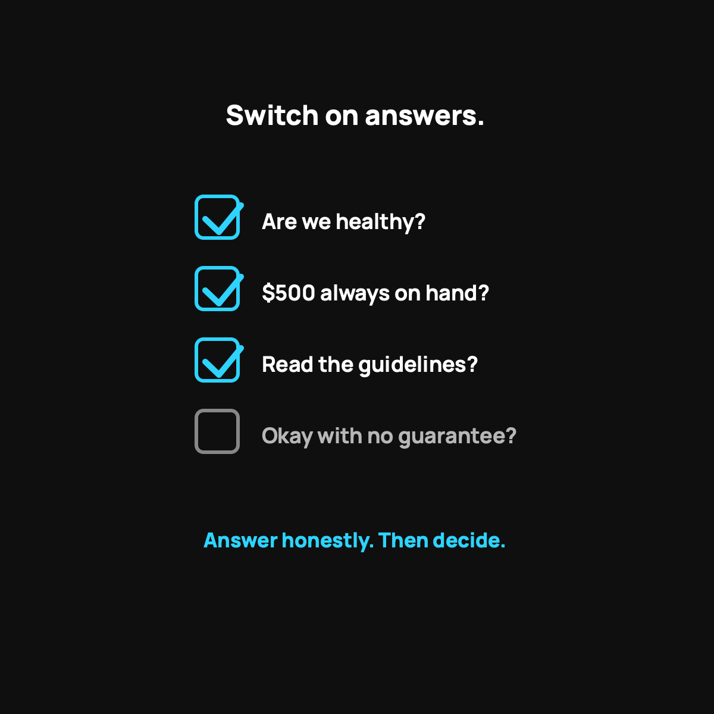

What to Ask Before You Switch
The exact questions to answer before you jump. Switch on answers, not hype.
Before you switch to health sharing, answer four sets of questions honestly. Health: any pre-existing conditions or expensive ongoing meds? Money: can you keep $500 liquid plus a small emergency fund, and what do you pay now, all in? The model: have you read the actual guidelines and accepted it's not insurance? Temperament: are you okay being a little hands-on?

If you're seriously thinking about switching to health sharing, don't do it on a feeling, good or bad. Do it on answers. Below is the exact list of questions I'd sit down and answer honestly before making the jump. Run through these, and you'll either feel confident or you'll realize it's not your fit. Either outcome is a win, because both beat guessing.
Questions about your health
- Do we have any pre-existing conditions? If so, look up the exact waiting-period rule for each one. This is the biggest factor, and I broke down the pre-existing condition rules.
- Does anyone take an expensive ongoing medication? The model funds events, not predictable high monthly drug costs. Know your numbers here.
- Are we generally healthy? Be honest. Health sharing rewards the healthy and is a poor fit for someone needing constant, costly care right now.
Questions about your money
- Can we keep $500 liquid at all times for the per-event commitment?
- Do we have a small emergency fund on top of that, so a gap or a slow month never wrecks us?
- What are we paying now, all in? Add up your current premiums, deductible exposure, and typical out-of-pocket. You need this number to compare honestly. I laid out the real monthly math.
Questions about the model itself
- Have I actually read the guidelines? Not a summary, the real thing. What's eligible, what isn't, how waiting periods work.
- Do I understand it's not insurance? No legal guarantee, ever. If that fact keeps you up at night, that's important information about your own risk tolerance.
- What's my plan for the stuff it doesn't cover? Routine dental, vision, and the like. Have a cheap workaround ready.
Questions about your temperament
This one's underrated. Health sharing asks you to be a little more hands-on and a little more comfortable with managing your own care and bills. So ask yourself: am I okay asking for the cash price, keeping a cushion, and reading the rules? If you're the type who wants to hand it all off and never think about it, that's worth knowing before you switch.
A simple way to decide
If most of your answers point toward "healthy, some savings, comfortable managing a bit of risk, read the rules," health sharing is very likely a strong fit. If several answers point toward "active condition, expensive ongoing meds, no cushion, need a guarantee," it's probably not, and that's fine. Use the right tool. Here is my honest who-should-skip-this post.
The takeaway
Switching to health sharing is a good decision when it's an informed one. Answer these questions about your health, your money, the model, and your own temperament, and the right choice usually makes itself obvious. Don't switch on hype, and don't dismiss it on fear. Switch on answers.
Questions I get about this
What's the most important question before switching to health sharing?
Whether anyone in your family has an active pre-existing condition or takes an expensive ongoing medication. That's the biggest factor. Look up the exact waiting-period rule for each condition in Pre-Existing Conditions and Health Sharing.
How do I compare my current insurance cost honestly?
Add up your premiums, your deductible exposure, and your typical out-of-pocket for a year. Then compare that to the health sharing fees plus $500 per event. Monthly bill alone is only half the story.
What if my answers are mixed?
If most point toward healthy, some savings, comfortable managing a bit of risk, and willing to read the rules, it's likely a strong fit. If several point toward an active condition, pricey meds, no cushion, or needing a guarantee, it's probably not, and that's fine. Use the right tool.
Ready to check your answers against the real thing? Use my code NORMAL: see CrowdHealth (opens in a new tab). New members get their first 3 months at $99 a month with code NORMAL.
My family of four uses CrowdHealth and I really believe in the model. If you join through my discount link (opens in a new tab) (code NORMAL), you get your first 3 months at $99 a month, and Normaltown USA earns a referral bonus if you stick around. It costs you nothing extra, and I only refer you to things I would tell a friend about. Health sharing is not insurance, and nothing here is medical, tax, or financial advice.

Written by David Dewese
Normal guy with a full-time job, wife, and kids. Spent twenty years pursuing music and creative ventures before starting a family. Sharing tips and tricks on how to thrive while living on an artist's income. Not a financial advisor. More about me.
New here?
Normaltown USA is plain-English money and healthcare help for normal people, written by a regular guy with a family of four. No jargon, no hype. Start here, or read the FAQ.